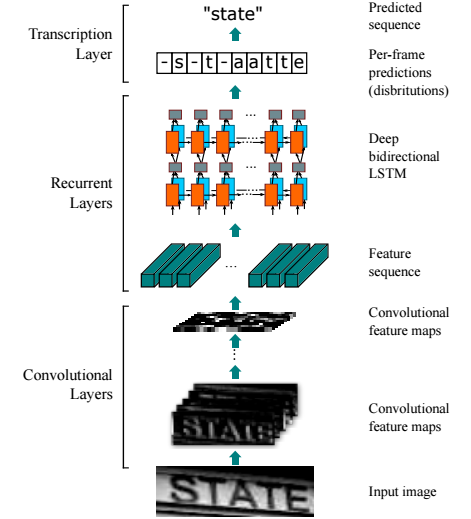
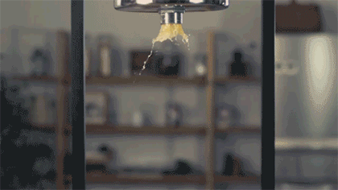
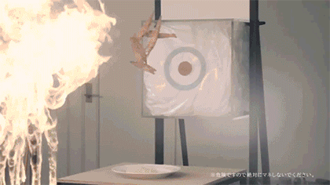

Deep Learning & Computer Vision
第 2 讲
授课教师：王兴刚 · 华中科技大学 电信学院
深度学习发展史
xwcv.github.io
第 2 讲 · 导览 课堂主讲 02
Overview
本讲关注：把核心模型的计算过程讲透
第 1 讲回答了“为什么转向深度学习”；本讲回答“这些模型各自怎么算、怎么用”——从一次训练迭代，到 CNN、注意力、扩散生成，再到智能体与具身模型。
承上启下：第 1 讲概念与历史的 2 页快览 详见第 1 讲
训练机制：神经元、激活函数、损失与一次训练迭代
卷积网络：局部连接、权重共享与深度革命 ResNet
大模型时代：注意力、扩散生成、后训练与推理模型 ChatGPT
走向行动：代码智能体、VLA 与世界动作模型 Agentic AI
第 2 讲 · 导览 课堂主讲 03
Learning Outcomes
学完这讲，你应该能解释模型如何学习
把一次训练迭代讲清楚：模型做出预测，损失衡量误差，反向传播计算梯度，优化器更新参数
说明卷积为什么适合图像，以及局部连接和权重共享带来了什么
比较 CNN 与 Transformer 的归纳偏置、数据需求和计算特点
解释自注意力、扩散生成、指令微调与偏好对齐各自解决什么问题
说清代码智能体的执行循环，以及 VLA 与世界动作模型（WAM）在机器人任务中各自扮演什么角色
面对模型输出，知道哪些结果需要检索、工具或人工复核
判断是否真正理解的方法很简单：不说“端到端”“涌现”这类术语，也能把输入、计算、输出和限制 讲明白。
第 2 讲 · 导览 课堂主讲 04
How to Take This Lecture
内容量大，按三层要求分配注意力
掌握
必须掌握
卷积 （局部连接 + 权重共享）、残差连接 、注意力 的计算直觉，以及生成与判别 两类模型的区别——后续课程与考核都以此为基础。
会用
能够使用
动手算出来：CNN 输出尺寸与参数量 、注意力权重手算 、扩散训练目标 的每一步——正好对应本讲三个课堂练习。
了解
了解前沿
代码智能体、VLA、WAM 的代表工作与核心概念——知道它们各自解决什么问题即可，不要求记住模型名称与日期。
建议节奏：前半讲（训练机制 + CNN）放慢，确保人人能算；后半讲（大模型与具身）建立整体图景，细节留给课后按参考文献深入。
本讲每页右上角标注归属：课堂主讲 课堂选讲 课后阅读 ——前沿代表工作只需了解，不要求记住模型名称。
01
承上启下
第 1 讲留下了什么？本讲要往哪里走？
课堂主讲
第 2 讲 · 承上启下 课堂主讲 06
Recap · 详见第 1 讲
回顾（一）：三组概念，一分钟带过
01
AI ⊃ ML ⊃ DL
人工智能是让机器拥有智能的总目标；机器学习用数据 代替手写规则；深度学习用深层神经网络自动学习表示 。
02
语义鸿沟
计算机看到像素矩阵，人类看到猫和场景；视角、光照、遮挡让同类图像像素差异巨大。跨鸿沟靠学出来的特征表示 。
03
特征工程 → 表示学习
传统流水线：手工特征（SIFT/HOG）+ 浅层分类器，瓶颈在特征；深度学习：端到端联合优化 ，性能随数据与算力增长。
04
奠基者
Bengio、Hinton、LeCun 获 2018 年图灵奖 ；Hinton 再获 2024 年诺贝尔物理学奖 。
这些概念的问题意识已在第 1 讲展开，此处不再重复——本讲直接进入机制与计算过程 。
第 2 讲 · 承上启下 课堂主讲 07
Recap · 详见第 1 讲
回顾（二）：为什么 2012 年是转折点？
01
低谷 ≠ 停止
1995–2006 年神经网络的研究热度与主流路线地位下降 ，SVM + 手工特征成为主流；但研究与应用从未停止——LeNet 在 1990 年代已规模用于银行支票识别。
02
2006：训练难题松动
Hinton 的深度置信网络用逐层预训练 缓解深网优化困难；算法 × 算力 × 数据开始共振，2011 年语音识别率先大幅刷新纪录。
03
2012：AlexNet 时刻
ImageNet（1400 万标注图）备好燃料，AlexNet 以 15.3% Top-5 错误率夺冠、甩开亚军 10.8 个百分点，深度革命爆发。
04
连锁反应
2013 年 Google、百度上线深度学习视觉搜索；2014 年 DeepID2 人脸验证 99.15% ，首次超越人类表现。
历史的因果链条（为什么低谷、为什么复兴）已在第 1 讲讲透；记住框架：算法 × 算力 × 数据 三要素共振——它贯穿本讲，也解释大模型时代。
02
神经网络如何训练
一个神经元会算什么？一次训练迭代改了什么？
课堂主讲
第 2 讲 · 训练机制 课堂主讲 09
人工神经元：加权求和 + 非线性
灵感来自生物神经元：树突输入、轴突输出
输出 = 激活函数（加权和）：g(x ) = f(Σ wi xi + b)
权重 w 是可学习的参数
单个神经元是线性分类器；多层堆叠获得强大表达能力
神经元 = 加权求和 + 非线性激活 ；权重 w 就是网络要从数据中学习的参数，b 是偏置。
第 2 讲 · 训练机制 课堂主讲 10
激活函数：非线性的来源
没有非线性激活，多层网络等价于单层线性变换；ReLU 曾是现代 CNN 的默认选择，至今仍被广泛使用；Transformer 和许多新模型通常使用 GELU、SiLU/SwiGLU 等激活。
第 2 讲 · 训练机制 课堂主讲 11
训练 = 最小化损失函数
L = (1/m) Σi ( ŷi − yi )² 均方误差（MSE）：衡量预测与真值的差距，常用于回归任务
# 梯度下降：沿损失函数的负梯度方向迭代更新参数
while True :
grad = evaluate_gradient(loss_fn, data, weights)
weights -= step_size * grad # w ← w − η · ∂L/∂w
# 反向传播（Backpropagation）= 用链式法则高效算出每一层的 ∂L/∂w
# 前向算预测 → 计算损失 → 反向传梯度 → 更新权重
训练神经网络 = 梯度下降 负责更新参数 + 反向传播 负责高效算梯度，二者缺一不可。
第 2 讲 · 训练机制 课堂主讲 12
分类任务：从 logits 到交叉熵
logits z = (z1 , …, zK ) 网络最后一层为每个类别输出一个未归一化的分数
pk = ezk / Σj ezj softmax 把 logits 转成总和为 1 的概率分布
L = −log py 交叉熵：正确类别概率 py 越低，惩罚越大；py →1 时 L→0
# PyTorch 的 CrossEntropyLoss 内部已含 softmax，直接接收 logits
logits = model(images) # 每个样本 K 个类别分数
loss = cross_entropy(logits, labels) # = −log softmax(logits)[正确类]
回归常用 MSE，分类通常用交叉熵 ：交叉熵直接优化「正确类别的概率」，且当该概率接近 0 时梯度依然强烈——它是图像分类的标准损失，MSE 则更多用于回归。
第 2 讲 · 训练机制 课堂主讲 13
One Training Step
一次训练迭代中，哪些量发生了变化？
计算 这一阶段在回答什么 发生变化的量
前向计算 当前参数会给出什么预测？ 激活值和预测结果；参数暂时不变 计算损失 预测与目标相差多少？ 得到一个用于优化的标量 反向传播 每个参数对误差负有多大责任？ 得到各参数的梯度；参数仍未更新 优化器更新 参数应向哪个方向移动多少？ 权重发生小幅变化
常见误解：反向传播本身不更新参数，它只负责计算梯度；真正改动权重的是 SGD、Adam 等优化器 。
03
卷积神经网络
卷积为什么适合图像？网络加深后为什么更难训练？
课堂主讲
第 2 讲 · 卷积神经网络 课堂主讲 15
CNN 的思想源流
Neocognitron（1980） 已经交替使用特征提取层和容忍局部位移的层。LeNet-5（1998） 把卷积、下采样和全连接网络放进可用反向传播训练的系统。AlexNet（2012） 沿用层次化局部处理，用 ImageNet、GPU 和更大的网络把效果推到新水平。
看右图时只抓住一件事：空间分辨率逐层降低，特征种类逐层增加，局部模式被组合成更复杂的模式。
图源：Fukushima, Biological Cybernetics, 1980
第 2 讲 · 卷积神经网络 课堂主讲 16
卷积层：卷积核在图像上滑动
每个输出值 = 卷积核与对应局部区域的点积；多个卷积核产生多通道特征图（如 32×32×3 图像 + 6 个 5×5×3 卷积核 → 28×28×6）。
第 2 讲 · 卷积神经网络 课堂主讲 17
卷积为什么适合图像？
局部连接 ：每个神经元只看一小块感受野
权重共享 ：同一个卷积核在所有位置复用
平移等变性：猫出现在左上角还是右下角都能检测
参数量大幅缩减：5×5×3 核只有 75 个参数，与图像大小无关
对比全连接：1000×1000 图像单层全连接需 10¹² 量级参数，卷积只需数百
池化（Pooling）：降采样、扩大感受野、增强平移鲁棒性
记住：局部连接 + 权重共享 是卷积层参数高效的根本原因。
第 2 讲 · 卷积神经网络 课堂主讲 18
Exercise · 课堂 2 分钟
练习 ①：CNN 的输出尺寸与参数量
输出边长 = ⌊(N + 2P − K) / S⌋ + 1 N：输入边长 K：卷积核边长 P：填充 S：步幅
Q1 输出尺寸 ：输入 32 × 32 × 3，10 个 5 × 5 卷积核，S=1、P=0 → 输出特征图是几维？Q2 参数量 ：这个卷积层有多少个可学习参数（含偏置）？若改成输出同为 28×28×10 的全连接层，大约要多少参数？Q3 池化 ：Q1 的输出再接 2 × 2 最大池化（S=2），尺寸变为多少？每个神经元看到的输入区域发生了什么变化？
第 2 讲 · 卷积神经网络 课堂主讲 19
Exercise · 参考答案
练习 ① 参考答案：CNN 的输出尺寸与参数量
Q1 输出尺寸 ：(32 − 5) / 1 + 1 = 28 → 输出 28 × 28 × 10 Q2 参数量 ：每个核 5×5×3 + 1 = 76，10 个核共 760 个参数（与图像大小无关）；换成输出同为 28×28×10 的全连接层需 (32·32·3) × (28·28·10) ≈ 2.4×10⁷，相差约 3 万倍——这就是权重共享的威力Q3 池化 ：14 × 14 × 10 ；池化降采样，同时让每个神经元对应的输入区域（感受野）扩大
讲评重点：卷积层参数量只取决于核大小 × 通道数 ，与输入图像尺寸无关——这是 Q2 与全连接对比的核心。
第 2 讲 · 卷积神经网络 课堂主讲 20
AlexNet 架构（2012）
5 个卷积层 + 3 个全连接层，约 6000 万参数；输入 224×224×3，输出 1000 类；在 2 块 GPU 上训练约一周；学到的表示可直接迁移到检测、分割、检索等任务。
图源：Krizhevsky et al., NeurIPS 2012
第 2 讲 · 卷积神经网络 课堂选讲 21
AlexNet 为什么能成功？
Hinton 团队并无丰富的大规模图像分类经验，但他们把当时所有关键要素用到了极致。
ReLU 激活 ：缓解梯度消失，训练速度数倍于 tanhGPU 训练 ：2 块 GTX 580 并行，一周训完 6000 万参数Dropout ：随机丢弃神经元，强力抑制过拟合数据增广 ：裁剪、翻转、颜色扰动，扩充有效数据量ImageNet 大数据 ：百万级标注图像是这一切的基础
AlexNet 的启示：突破是算法 + 算力 + 数据 + 工程细节 （ReLU/Dropout/增广）的系统胜利。
第 2 讲 · 卷积神经网络 课堂选讲 22
网络自己学到了什么？
AlexNet 第一层 96 个 11×11 卷积核：一半学到频率/方向选择性的边缘检测器（灰度），另一半学到颜色检测器——与生物视觉皮层的简单细胞惊人相似。手工特征时代要精心设计的东西，网络自己学出来了。
图源：Krizhevsky et al., NeurIPS 2012
第 2 讲 · 卷积神经网络 课堂选讲 23
AlexNet 的 Top-5 预测
8 张测试图的 Top-5 预测（柱高 ∝ 概率）
正确标签基本都在 Top-5 之内
错误也「情有可原」：grille（格栅）vs. convertible（敞篷车）
即使物体不在画面中心（螨、豹），依然能识别
第 2 讲 · 卷积神经网络 课堂主讲 24
深度革命（Revolution of Depth）
16.4%
AlexNet
8 层 · 2012
7.3%
VGG
19 层 · 2014
6.7%
GoogLeNet
22 层 · 2014
3.6%
ResNet
152 层 · 2015
ILSVRC 冠军的层数（柱高）与 Top-5 错误率（标注）：深度是性能提升的主轴。同期关键技术：PReLU、批归一化（Batch Normalization）、深监督（DSN）等相继出现。口径说明：AlexNet 16.4% 为单模型 Top-5（CS231n 图表口径）；其多模型集成在 ILSVRC 测试集为 15.3%，ResNet 3.6% 同为集成测试集成绩。
第 2 讲 · 卷积神经网络 课堂主讲 25
但「简单堆层」遇到了退化问题
朴素堆叠的深层网络（plain net）训练误差反而更高
56 层比 20 层差——不是过拟合，是优化本身失败
并非简单的梯度消失（BN 等手段已能缓解）；本质是深层非线性映射难以优化
问题：如何让 100+ 层的网络可训练？
退化 ≠ 过拟合：过拟合是训练误差低、测试误差高；退化是训练误差本身就高 ——问题出在优化。
第 2 讲 · 卷积神经网络 课堂主讲 26
ResNet 的答案：残差连接
不让层直接学 H(x)，改学残差 F(x) = H(x) − x
输出 y = F(x) + x ：恒等捷径（skip connection）
恒等分支为梯度提供直接通路 （∂y/∂x 含 +1 项），让深层映射更易于优化
学不到东西时 F(x)→0，退化为恒等映射——这是表达能力上的直觉 （更深至少不差于更浅），并非训练结果的保证
152 层 ResNet 获 ILSVRC 2015 冠军（3.6%），残差思想成为现代网络标配
残差连接 y = F(x) + x 为梯度提供恒等通路，让百层网络可训练——但它缓解而非根除优化难题，仍需 BN、初始化等配合，极深网络依然有训练不稳定的可能。
第 2 讲 · 卷积神经网络 课堂主讲 28
Chapter Summary
本章小结：卷积神经网络与深度革命
01
两大思想
局部连接 （只看感受野）+ 权重共享 （全图复用同一卷积核）→ 参数高效、平移等变。
02
AlexNet 工程配方
ReLU + GPU + Dropout + 数据增广 + ImageNet ，五个要素把 6000 万参数的网络真正训了出来。
03
深度革命
VGG 19 层 → GoogLeNet 22 层 → ResNet 152 层 ；ILSVRC 错误率从 16.4% 一路降到 3.6% 。
04
残差连接
朴素堆层会遇到退化 （深层非线性映射难以优化，而非过拟合）；y = F(x) + x 的恒等分支为梯度提供直接通路、让深层映射更易优化，配合 BN、初始化、Dropout 构成训练工具箱。
第 2 讲 · 贯穿案例 课堂主讲 29
贯穿案例 · 零件缺陷检测（问题定义见第 1 讲）
用案例走一遍训练流程：CNN 基线 + 交叉熵
零件图像 → CNN → logits → softmax → 交叉熵损失 → 反向传播 → 优化器更新权重
# 产线相机零件图像 → 4 类：合格 / 划痕 / 凹坑 / 污渍
logits = cnn(images) # CNN 基线输出 4 个类别分数
loss = cross_entropy(logits, labels) # softmax + 交叉熵（见「训练机制」一节）
loss.backward() # 反向传播：链式法则算出每层 ∂L/∂w
optimizer.step() # 优化器沿负梯度方向更新权重
口径沿用第 1 讲：数据按生产批次划分 训练/验证；指标缺陷召回率优先 ，兼顾误报率与 PR 曲线——漏检一个缺陷件的代价远高于一次误报。
第 2 讲 · 贯穿案例 课堂主讲 30
贯穿案例 · 零件缺陷检测
小数据集上的过拟合：先看表现，再谈对策
表现
过拟合长什么样
工业缺陷数据集通常很小：训练批次准确率很快接近 100%，但新生产批次 上漏检率明显升高——模型记住了训练图里的那几条划痕，而不是「缺陷长什么样」。
对策
三件常用工具
数据增广 （旋转、亮度、裁切，模拟产线成像波动）、权重衰减 （约束参数规模）、早停 （按验证批次的缺陷召回率决定何时停止训练）。
复盘
看错误样例
漏检集中在浅划痕 与低对比度污渍 ，且与光照、批次波动高度相关——错误样例指引下一步：优先补这类数据，而不是盲目加深网络。
本讲先建立「训练 → 过拟合 → 对策 → 复盘」的完整回路；增广怎么选、要不要用预训练等训练策略比较 ，将在第 3 讲用这个案例继续展开。
04
深度学习重塑视觉任务
同一套视觉特征如何服务分类、检测和分割？
课堂选讲
第 2 讲 · 视觉应用 课堂选讲 32
目标检测：R-CNN（2014）
提取约 2000 个候选区域 → 逐区域过 CNN 提特征 → SVM 分类
PASCAL VOC mAP：33.4%（DPM）→ 53.7% （R-CNN）
「区域 + CNN 特征」范式开启检测深度学习时代
后续演进：Fast/Faster R-CNN → 单阶段 YOLO 系列
第 2 讲 · 视觉应用 课堂选讲 33
Research Case · HUST-VL
Mask Scoring R-CNN：给掩码增加质量预测
Mask R-CNN 的分类分数回答：实例属于该类别的可能性有多大
它没有直接回答：预测掩码与真实掩码重叠得有多好
新增 MaskIoU head，把实例特征与预测掩码一起输入，回归掩码 IoU
最终 mask score 由分类置信度与预测质量共同决定
Huang et al., Mask Scoring R-CNN, CVPR 2019 · github.com/zjhuang22/maskscoring_rcnn
第 2 讲 · 视觉应用 课堂选讲 34
Research Case · Mask Scoring R-CNN
为什么要校准分数？先看这些失败样例
左侧四例：分类分数很高，但掩码边界明显不准；最右侧：分类分数高且掩码质量也高。原分数难以区分这两种情况。
课堂追问：COCO AP 会按分数给预测排序。如果低质量掩码排在高质量掩码之前，即使类别判断正确，最终 AP 为什么仍会下降？
官方项目可视化：Huang et al., CVPR 2019
第 2 讲 · 视觉应用 课堂选讲 35
语义分割：全卷积网络 FCN（2015）
把分类网络的全连接层改为卷积层（convolutionalization）
任意尺寸输入 → 端到端输出逐像素的类别热图
跳跃连接融合深层语义与浅层细节
PASCAL VOC 相对提升 20%，推理从约 50 秒降到 175 毫秒
第 2 讲 · 视觉应用 课堂选讲 36
Research Case · HUST-VL
CCNet：两次十字交叉注意力怎样覆盖全图？
对位置 u ，只取与它同一行或同一列的特征集合 Ωu ，共 H+W−1 个位置。
di,u = Qu Ωi,u T
Q 与同行、同列的 K 做点积，得到相关性
A:,u = softmax(d:,u )
沿十字路径归一化为注意力权重
H′u = ∑i∈Ωu Ai,u Φi,u + Hu
对 V 加权汇聚，并保留输入的残差连接
Q、K 用 1×1 卷积降维；V 保留用于传递的内容特征。
同一模块共享参数循环两次 ：第一次到达同行、同列，第二次经中间位置覆盖全图。
与全局 Non-local 为每个位置计算 HW 个权重不同，十字交叉注意力只计算 H+W−1 个；R=2 获得全局依赖，但两个循环不增加新的模块参数。
Huang et al., CCNet, ICCV 2019 / TPAMI 2023 · github.com/speedinghzl/CCNet
第 2 讲 · 视觉应用 课堂选讲 37
Research Case · CCNet
注意力图显示：第二次汇聚得到更完整的语义区域
每组从左到右：输入图像与查询点、R=1 的十字路径注意力、R=2 的全局上下文。高响应位置往往具有相近语义。
论文相较非局部模块报告约 1/11 的 GPU 显存和约 85% 的计算量减少。效率来自稀疏连接，而全局性来自重复汇聚。
官方项目注意力可视化：Huang et al., ICCV 2019
第 2 讲 · 视觉应用 课堂选讲 38
深度学习改写每一个视觉子领域
(a) 图像描述：CNN + RNN，Show and Tell（CVPR 2015）

(b) 场景文字识别：CRNN（TPAMI 2017）
(c) 图像翻译：CycleGAN（ICCV 2017）
此外还有：边缘检测（HED）、轮廓检测（DeepContour）、超分辨率（SRCNN）、图像着色——几乎每个子领域都被端到端学习刷新。
第 2 讲 · 超越视觉 课堂选讲 39
AlphaGo：深度网络 + 强化学习（2016）
DeepMind 的围棋程序，2016 年 4:1 击败李世石
策略网络 ：CNN 输入 19×19×48 棋盘特征，输出落子概率分布价值网络 ：评估局面胜率，减少搜索深度结合蒙特卡洛树搜索，登上《Nature》封面
第 2 讲 · 超越视觉 课堂选讲 40
深度学习的影响力早已超出视觉
游戏决策
DQN 从画面直接学习动作
Q(动作)
同一套网络在 49 款 Atari 游戏上学习；总体表现达到专业人类测试员的 75% 以上。
自主导航
单目图像决定林间行进方向
左 / 直 / 右
训练数据来自头戴相机拍摄的森林小径，网络将每帧图像分为左转、直行或右转。
工业控制
预测温度，再调节冷却设备
冷却能耗
DeepMind 在 Google 数据中心控制冷却系统，报告称冷却能耗降低约 40% ，并非总能耗降低 40%。
医疗影像
在病理切片中定位有丝分裂
多列深度 CNN 赢得 ICPR 2012 MITOSIS 竞赛，说明学习特征已能替代专门设计的细胞形态特征。
视觉模型不再只回答“这是什么”，还会把感知结果用于动作选择、设备控制和临床辅助判断。
Mnih et al., Nature 2015 · Giusti et al., IEEE RA-L 2016 · DeepMind, 2016 · Cireşan et al., MICCAI 2013
第 2 讲 · 视觉应用 课堂选讲 41
Chapter Summary
本章小结：深度学习重塑视觉任务
01
目标检测：R-CNN 系列
R-CNN（CVPR 2014）用「候选区域 + CNN 特征」把 VOC mAP 从 33.4% 提到 53.7% ；后续 Faster R-CNN、YOLO 走向实时。
02
语义分割：FCN
分类网络全卷积化 ，任意尺寸输入、端到端输出逐像素热图（CVPR 2015），成为分割的标准范式。
03
子领域全面改写
图像描述（CNN+RNN）、场景文字识别（CRNN）、图像翻译（CycleGAN）、边缘检测、超分辨率——端到端学习 刷新每一个子领域。
04
超越视觉
AlphaGo（Nature 2016）= 深度网络 + 强化学习 + 蒙特卡洛树搜索；影响力延伸至语音、游戏、医疗、工业。
05
大模型时代
注意力、规模和后训练分别改变了模型的什么能力？
模型骨干在变化，训练问题也在扩展：输出从类别和位置，扩展到文本、像素、未来状态与动作。
课堂主讲
第 2 讲 · 大模型时代 课堂选讲 43
Reading Note · 时效与口径
本部分信息截至 2026 年 8 月，请按来源分级采信
A
论文验证结果
经同行评审或公开复现的结论，如 Transformer（NeurIPS 2017）、DeepSeek-R1（Nature 2025）——可信度最高，但结论边界以实验设置为准。
B
厂商技术报告
如 DeepSeek-V3、Qwen3、Kimi K2 技术报告——方法细节丰富，但基准数字由厂商自测，未必经独立复现。
C
产品能力声明
如「编码能力开源第一」等宣传口径、产品功能与价格状态——变化最快，引用时注意页面上的「截至 2026.08」角注。
D
教师归纳
如 VLA 动作表示的三分法、WAM 的级联/联合二分——本课为教学组织的整理框架，帮助记忆，并非公认唯一的分类体系。
模型版本、参数量与产品状态时效性极强：本部分统一按截至 2026 年 8 月 口径编写，关键页面右下角另有角注；引用前请核对最新官方信息。
第 2 讲 · 大模型时代 课堂主讲 44
From CNN to Attention
从卷积到注意力：为什么需要新架构？
卷积先读局部，再靠加深网络传播信息；全局注意力允许任意两个位置直接交互。
卷积 计算高效，并把局部性和平移等变性写进结构。全局注意力 直接比较所有位置，更容易表达远距离关系，但计算量随位置数平方增长。实际网络会按数据规模、分辨率和任务组合卷积、局部注意力与全局注意力。
架构选择不是“谁淘汰谁”，而是决定模型以多大的代价让信息在空间中流动。
示意图改绘自 Huang et al., CCNet, ICCV 2019
第 2 讲 · 大模型时代 课堂主讲 45
Transformer：只用注意力的架构（2017）
《Attention Is All You Need》：抛弃循环与卷积，只用注意力
输入 token 先加位置编码 ，再堆叠 N 个相同模块
每个模块 = 多头自注意力 + 前馈网络，各配残差连接与层归一化
并行度高、高度可扩展 → 成为语言、视觉、多模态大模型的统一基座
模块中的 Add & Norm 正是 ResNet 残差连接的延续——深网络训练工具箱在这里继续生效。
第 2 讲 · 大模型时代 课堂主讲 46
自注意力如何让每个位置读取全局信息？
Attention(Q,K,V) = softmax(QKT / √dk )V
Q 与 K 做匹配 ：当前位置应关注哪些位置？softmax 归一化 ：把匹配分数变成总和为 1 的权重。对 V 加权求和 ：真正读回所关注位置携带的内容。
多头注意力并行学习多组匹配关系；位置编码则告诉模型 token 的次序或空间位置。
依据：Vaswani et al., Attention Is All You Need, NeurIPS 2017
第 2 讲 · 大模型时代 课堂主讲 47
Exercise · 练习 ② · Attention by Hand
“它追着球跑”中的“它”应该读取谁的信息？
“它”发出查询 Q ：句子里谁最可能是我的指代对象？
每个词提供索引 K 和内容 V ；匹配越紧，权重越大
信息按权重加权汇入 “它”的新表示；换成图像时，每个 patch 同样能查询远处 patch
练习：q它 = (1, 0)，k小狗 = (1, 0)，k球 = (0, 1)
第一步 q·k 打分 → 第二步 softmax 归一 → 第三步对 V 加权求和
先独立算出两个注意力权重和输出向量，再翻页核对参考答案 。
第 2 讲 · 大模型时代 课堂主讲 48
Exercise · 练习 ② · 参考答案
练习 ② 参考答案：手算注意力权重
Attention(Q,K,V) = softmax(QKT / √dk )V 本题 dk = 2；√dk 缩放只压缓差距，不改变谁大谁小
第一步 打分 ：q·k小狗 = 1，q·k球 = 0第二步 归一 ：softmax(1, 0) ≈ (0.73 , 0.27 )（若计入 √dk 缩放，softmax(0.71, 0) ≈ (0.67, 0.33)，结论不变）第三步 加权求和 ：输出 = 0.73·v小狗 + 0.27·v球 ——“它”主要读取“小狗”的信息
再提醒：注意力权重展示信息如何汇聚，但不能自动等同于可靠的因果解释。
第 2 讲 · 大模型时代 课堂主讲 49
Vision Transformer：把图像当句子读（2020）
把图像切成 16×16 小块并拉平成向量——图像变成一串「视觉词元」
加上位置编码，直接套用标准 Transformer 编码器 ，几乎不改架构
大规模预训练（JFT-300M）下超越 CNN；小数据上则不如 CNN
Swin Transformer （ICCV 2021，Marr Prize）：窗口注意力 + 层级结构，兼容检测、分割等密集预测
第 2 讲 · 大模型时代 课堂主讲 50
CNN vs. ViT：两种视觉范式
对比维度 CNN（ResNet） ViT / Swin
归纳偏置 强 ：局部性 + 平移等变内置弱 ：主要靠数据自己学全局建模 堆层间接扩大感受野 ViT ：一层注意力直达任意位置；Swin ：窗口内局部注意力 + 移位逐层扩大范围数据需求 小数据友好 渴求大规模预训练 特征结构 金字塔（多尺度） 等宽柱状（Swin 兼顾多尺度） 代表模型 VGG、ResNet ViT、Swin
ViT 表明：在足够规模的预训练下，较弱的视觉归纳偏置也能取得很强结果；在小数据或密集预测中，CNN 与层级式 Transformer 仍各有优势。
第 2 讲 · 大模型时代 课堂主讲 51
端到端学习把全部环节放在一起优化
传统烹饪
去壳 → 腌制 → 裹粉 → 油炸


端到端训练会联合优化所有环节，并直接对齐最终目标 ；传统流水线则逐模块独立设计。
素材：Naiyan Wang「Traditional Cooking vs. End-to-End Cooking」演示
深度学习把许多任务写成同一个问题：y = f(x) 。
端到端学习把特征提取和任务目标放在一起优化
课堂主讲
第 2 讲 · 大模型时代 课堂主讲 53
“涌现”描述了什么？为什么仍有争议？
一些离散评分任务中，较小模型接近随机水平，较大模型的得分明显上升
Wei et al.（2022）把这种随规模出现的非连续表现称为涌现能力
后续研究指出，准确率等非连续指标可能放大“突然出现”的观感
换用连续指标或更细的模型尺度后，部分能力会呈现更平滑的变化
更稳妥的理解是：涌现描述了某些评测结果随规模的变化 ，并不等于已经证明模型内部发生了明确的相变。
依据：Wei et al., TMLR 2022；Schaeffer et al., NeurIPS 2023
「被编程为预测下一个词的语言模型，并非某些人以为的巧合；惊人的复杂与美丽 。」
—— Sam Altman，2023.3
这是一种观点/类比 ，而非已经验证的机制——请结合上一页「涌现」的测量争议，把它当作讨论素材，而不是本讲结论。
课后阅读
第 2 讲 · 大模型时代 课后阅读 55
Research Case · HUST-VL
YOLO-World：把类别名称从固定输出变成文本输入
图像进入 YOLO 检测骨干；类别文本进入文本编码器；RepVL-PAN 融合区域与文本特征，通过区域—文本对比学习建立对应关系。论文在 LVIS 报告 35.4 AP、V100 上 52 FPS。
推理时先给出“person, bus, backpack”等词，再执行检测。开放词汇不是自动发现所有未知物体，而是允许用户更换要寻找的类别。
Cheng et al., YOLO-World, CVPR 2024 · github.com/AILab-CVC/YOLO-World
第 2 讲 · 大模型时代 课后阅读 56
视觉基础模型：Segment Anything（2023）
Meta AI 的分割基础模型（SAM）：可提示分割
点、框、掩码、文本均可作为提示（prompt）
数据引擎自举：1100 万图像、11 亿掩码（SA-1B）
统一的 Transformer 框架，强大的零样本泛化
第 2 讲 · 大模型时代 课后阅读 57
Depth Anything：单目深度估计基础模型
任意场景零样本深度估计（上：输入图像；下：预测深度图）——「Anything」成为基础模型的命名范式。
图源：Yang et al., Depth Anything, CVPR 2024 / depth-anything.github.io
第 2 讲 · 大模型时代 课后阅读 58
2024 · Foundation Models
视觉基础模型的新进展
SAM 2：从图像走向视频（2024.7）
Meta 发布，统一图像与视频 的可提示分割
记忆注意力机制跨帧跟踪目标，支持实时视频分割
配套 SA-V 数据集：约 5.1 万段视频、64 万+ 掩码轨迹
交互分割速度数倍于 SAM，标注成本进一步下降
Depth Anything V2（NeurIPS 2024）
抛弃人工标注真实图像，改用合成图像 保证细节精度
教师-学生范式：大教师模型为海量真实图像生成伪标签 ，小模型蒸馏学习
细节更锐利，小模型比 V1 快 10 倍以上
「合成数据 + 伪标签」成为数据引擎新范式
基础模型的趋势：从单张图像 走向视频与开放世界 ，从人工标注走向自助数据引擎 。
第 2 讲 · 大模型时代 课堂主讲 59
人工智能三要素与规模法则
数据 算法 算力 共同影响训练结果；增加其中一项并不保证所有任务都同步改善。
数据量之外，还要考虑质量、覆盖范围、重复样本、版权与隐私
Scaling Law：在一定条件下，预训练损失随参数、数据和计算量近似按幂律下降
规模扩大能带来较稳定的平均改进，但具体能力可能受数据构成、后训练和评测方式影响
ChatGPT 还依赖指令数据、人类偏好反馈和部署系统，不是单纯扩大模型
数据墙 ：高质量公开文本或在 2020 年代末耗尽（Villalobos et al., ICML 2024）——合成数据与推理时计算成为新的增长引擎。
第 2 讲 · 大模型时代 课堂选讲 60
ChatGPT：规模放大后出现新的对话能力（2022）
GPT = Generative Pre-trained Transformer （生成式预训练变换模型）
发布 2 个月月活跃用户破 1 亿——史上增长最快的消费者应用（TikTok 用了 9 个月）
把语言模型包装为自然的多轮对话界面，并通过人工反馈改善指令遵循
能完成问答、改写、摘要、代码生成等任务，但输出仍由概率生成
参数中的知识来自训练数据；没有检索或工具接入，就不会自动获得最新事实
ChatGPT 的影响来自预训练 + 指令微调 + 偏好对齐 + 产品系统 的共同作用——具体事实、引用与数字仍需检索或人工复核。
第 2 讲 · 大模型时代 课堂选讲 61
从 GPT-1 到 ChatGPT：架构延续，配方巨变
模型 年份 参数量 关键改进
GPT-1 2018 1.17 亿 12 层 Transformer；预训练 + 微调范式 GPT-2 2019 15 亿 48 层；零样本（zero-shot）能力初显 GPT-3 2020 1750 亿 96 层；上下文学习（in-context learning） ChatGPT 2022 — RLHF ：基于人类反馈的强化学习对齐人类意图
GPT 系列延续解码器式 Transformer；模型规模、训练数据和后训练方法都在变化。此后出现了 Claude、Gemini、Qwen、Llama、DeepSeek、Kimi 等不同技术路线。
“同一架构，持续放大”只是前半句：从 GPT-1 到 ChatGPT，训练数据 （BooksCorpus → 互联网级语料）、训练目标 （纯粹语言建模 → 指令与偏好）、后训练 （SFT / RLHF）与产品系统设计 都发生了根本变化——不是简单把同一个东西做大。
第 2 讲 · 大模型时代 课堂选讲 62
从语言模型到对话助手，需要哪些训练阶段？
① 人工示范用于监督微调；② 人工排序训练奖励模型；③ 奖励模型为 PPO 更新提供分数。图中三个步骤都发生在大规模预训练之后。
后训练改善指令遵循和回答偏好，但不保证事实正确；检索、工具调用和安全策略属于部署系统，不在这张训练图中。
图源：Ouyang et al., Training language models to follow instructions with human feedback, NeurIPS 2022
第 2 讲 · 大模型时代 课堂选讲 63
2024–2025 · Reasoning
推理模型：用「慢思考」换智能
预训练规模之外开辟新维度——推理时计算（test-time compute） ：让模型花更长时间「想」，再回答。
OpenAI o1 （2024.9）：强化学习训练思维链，数学竞赛（AIME）与科学问答（GPQA）成绩大幅跃升DeepSeek-R1-Zero / R1 （2025.1）：R1-Zero 不经监督微调、直接做纯强化学习，即可涌现自我验证、反思等推理行为；R1 在此基础上加入冷启动数据与多阶段训练，改善可读性与通用能力；开源权重，2025 年 9 月登上《Nature》OpenAI o3 （2025.4）：推理范式结合工具调用，直接面向智能体任务
Scaling 的新维度：从训练时计算 扩展到推理时计算 。但「想得更久」只是直觉而非机制：推理时计算增加并不自动带来正确推理——模型可能重复、走偏，或产出更长的错误过程；实际收益取决于训练方法、搜索/采样策略、验证器，以及任务本身的可验证性 。
截至 2026.08 · 依据：DeepSeek-AI et al., Nature 2025（论文验证）；OpenAI 官方公告（厂商声明）
第 2 讲 · 大模型时代 课后阅读 64
国产开源大模型快速迭代（2024–2026）
代表模型 发布 参数与架构 特点（基准结论为官方宣称）
DeepSeek-V3 2024.12 671B MoE（激活 37B） MLA + 无辅助损失负载均衡，降低训练与推理成本 DeepSeek-R1 2025.01 671B MoE 大规模强化学习训练推理；开放权重与蒸馏版本 Qwen3 2025.04 235B MoE（激活 22B） 一个模型同时支持思考与非思考模式 Kimi K2 · GLM-4.5 2025.07 1T/32B · 355B/32B MoE 开始针对编程、工具调用和多步智能体任务训练 DeepSeek-V3.2 2025.12 671B MoE 推理过程可穿插工具调用；训练覆盖 1,800+ 工具环境 Kimi K2.5 · Qwen3.5 2026.01–02 1T/32B · 397B/17B MoE 原生处理文字、图像和视频 MiniMax M2.7 · GLM-5 2026.02–03 —（官方未完整披露） 重点转向复杂软件工程、办公任务和长时间智能体执行 GLM-5.2 · Kimi K3 2026.06–07 744B · 2.8T MoE 1M 上下文进入长任务；K3 加入原生视觉 GLM-5.3 2026.08.14 沿用 GLM-5.2 基座，纯后训练 官方宣称：编码能力开源权重第一（内部 Code Bench 较 5.2 +50%）；网络安全能力随后训练涌现 Qwen3.8-Flash-Next 2026.08.26 125B MoE（激活 6B）+ 51B N-gram 嵌入；GDN + QSA 混合注意力 面向长上下文降本（原生 256K，YaRN 至 1M）；官方宣称训练成本为前代 1/9；Qwen4 架构预览
变化不只是参数变大： 推理开始与工具调用交织，视觉成为基础输入，后训练本身也能单独推动一代更新（GLM-5.3）。表中基准结论均为厂商官方宣称，未经独立复现。
截至 2026.08 · 来源：DeepSeek API Docs、Qwen Blog（qwen.ai/blog?id=qwen3.8-flash-next）、Kimi Research、Z.ai Blog（z.ai/blog/glm-5.3）、MiniMax News
第 2 讲 · 大模型时代 课堂主讲 65
扩散模型：前向加噪、反向去噪
前向过程 q（训练时固定，逐步加噪）
q(x_t|x_{t−1}) = N(√(1−β_t)·x_{t−1}, β_t I)
x₀
真实图像
x₁
x₂
……
x_T
≈ 纯高斯噪声
q(x₁|x₀)
q(x₂|x₁)
反向过程 p_θ（学习去噪）
每步：ε_θ 预测噪声 → 减去 → 图像变清晰一点
xt = √ᾱt · x₀ + √(1−ᾱt ) · ε， ε ~ N(0, I) 任意一步都可由 x₀ 一步构造（ᾱt 为噪声系数的累乘），不必逐步模拟
L = Ex₀, ε, t ‖ ε − εθ (xt , t) ‖² 训练目标：给一张加了噪的图，让网络猜出「加的到底是什么噪声」
训练 ：随机挑时刻 t → 按上式一步加噪 → 网络 εθ 学习预测噪声；生成 ：从纯噪声 xT 出发，每步用 εθ 估计并减去噪声，几十步后得到清晰图像。潜空间扩散（LDM）把这一切搬到压缩后的潜空间，降低成本。
依据：Ho et al., DDPM, NeurIPS 2020；Rombach et al., Latent Diffusion, CVPR 2022
第 2 讲 · 大模型时代 课堂选讲 66
2020–2024 · Diffusion Models
扩散模型的进步，发生在不同层面
代表工作 年份 主要变化 解决的问题
DDPM 2020 学习逐步反向去噪 建立稳定、可扩展的生成训练方法 Score SDE 2021 用随机微分方程统一扩散与 score matching 给出连续时间视角和多种采样器 Latent Diffusion 2022 在 VAE 潜空间而非像素空间去噪 显著降低高分辨率生成成本 DDIM · DPM-Solver 2020–22 改造反向采样轨迹或求解器 把数百步采样减少到几十步甚至更少 DiT 2023 用 Transformer 替代常见的 U-Net 去噪器 让生成模型更容易随模型和数据规模扩展 Consistency Models 2023 直接映射不同噪声水平到干净样本 支持一步或少步生成 Stable Diffusion 3 2024 MMDiT + Rectified Flow 改善文字理解、排版与高分辨率合成
不要混在一起： DDPM、Rectified Flow 改训练目标；U-Net、DiT 是去噪网络；DDIM、DPM-Solver 改采样过程。
Ho et al., NeurIPS 2020 · Song et al., ICLR 2021 · Rombach et al., CVPR 2022 · Peebles & Xie, ICCV 2023 · Song et al., ICML 2023 · Esser et al., ICML 2024
第 2 讲 · 大模型时代 课堂选讲 67
AIGC 浪潮：Stable Diffusion 文生图
文本编码器理解提示词，UNet 在潜空间逐步去噪（约 50 步），解码器还原成图像。Rombach et al., CVPR 2022；Midjourney 一年内实现千万用户与亿美元营收，随后 Sora、可灵、即梦等视频生成模型相继爆发。
第 2 讲 · 大模型时代 课堂选讲 68
从“随机生成”到可控、可定制
Classifier-Free Guidance （2022）：同一网络学习有条件与无条件预测，用 guidance scale 调节提示词约束强度DreamBooth （CVPR 2023）：用少量主体图片微调模型，学习特定人物或物体；数据过少时容易过拟合ControlNet （ICCV 2023）：冻结原模型，训练一条条件分支，把边缘、深度、姿态等空间信息注入去噪网络IP-Adapter （2023）：用 22M 参数的图像提示适配器补充文本提示，支持参考图控制LoRA ：只训练低秩增量，常用于风格、角色和领域定制，文件小、组合方便
Ho & Salimans, 2022 · Ruiz et al., CVPR 2023 · Zhang et al., ICCV 2023 · Ye et al., 2023 · Hu et al., ICLR 2022
第 2 讲 · 大模型时代 课堂主讲 69
Exercise · 课堂 3 分钟
练习 ③：把扩散训练的一步补全
# 扩散模型训练一步（DDPM）：请填空 ① ② ③
x0 = sample(dataset) # 取一张真实图像
t = randint(1, T) # 随机挑一个噪声时刻
eps = randn_like(x0) # 采样高斯噪声 ε
x_t = ① * x0 + ② * eps # 用 ᾱ_t 一步构造加噪图
loss = mse(eps, ③ ) # 网络要预测的 target 是什么？
loss.backward(); optimizer.step()
诊断题 ：某模型在 t 很大（输入几乎全是噪声）时损失明显偏高，t 小时正常——这是 bug 吗？
先补全 ①②③ 并思考诊断题，再翻页核对参考答案 。
第 2 讲 · 大模型时代 课堂主讲 70
Exercise · 参考答案
练习 ③ 参考答案：扩散训练的一步
# 扩散模型训练一步（DDPM）：补全后
x0 = sample(dataset) # 取一张真实图像
t = randint(1, T) # 随机挑一个噪声时刻
eps = randn_like(x0) # 采样高斯噪声 ε
x_t = sqrt(alpha_bar_t) * x0 + sqrt(1 - alpha_bar_t) * eps
loss = mse(eps, eps_theta(x_t, t) ) # target 就是加进去的噪声 ε
loss.backward(); optimizer.step()
填空 ：① √ᾱt ② √(1−ᾱt ) ③ εθ (xt , t)——网络要预测的不是图像，而是加进去的噪声 ε 本身 诊断题 ：多半不是 bug——t 大时输入几乎不含图像信息，网络只能靠条件「脑补」内容，噪声天然更难猜；若 t 很小时误差也大 ，才说明去噪细节没学好，应检查学习率、模型容量或条件注入
第 2 讲 · 大模型时代 课堂选讲 71
2024–2025 · Generation
视频生成与多模态统一
Sora （OpenAI，2024.2 演示、2024.12 开放）曾以「世界模拟器」出圈；Sora 2 （2025.9）实现音画同步、物理一致性大幅提升——但高昂成本下用户留存不佳，Sora 产品已于 2026 年 3 月宣布关停、4 月停止服务 ，现作为生成视频的历史坐标回顾视频模型赛道仍在演进：可灵 （快手，2024.6）、即梦、Vidu；Google Veo 3 （2025.5）首个原生生成音效对白的主流模型
GPT-4o （2024.5，「o」= omni）：文本、图像、音频由同一模型端到端处理；2025 年原生图像生成引发全民创作潮趋势：理解与生成统一于同一架构 ，「全模态」成为旗舰模型标配
Sora 的关停是一堂产品课：逼真的生成是表象 ，物理一致性（物体永存、因果、守恒）仍未解决，而成本与真实需求决定生成产品能走多远——世界模型仍是目标 而非现实。
依据：openai.com/index/sora-2/（2025.9 发布；2026.3 官宣关停，App/网页版 2026.4.26 停止服务）
第 2 讲 · 大模型时代 课后阅读 72
Agentic AI · Coding Agents
代码智能体 = 模型 + 工具 + 可验证的执行循环
任务 “修复登录失败后仍显示已登录”
Agent harness
理解上下文 · 选择工具 · 决定下一步
观察 → 操作 → 再观察
证据 diff、测试日志、运行结果
聊天模型给出一段答案；代码智能体会在真实项目中执行动作 ，并根据新结果继续修改。
先找上下文： 读项目说明、相关代码和已有测试，不凭文件名猜实现。再做最小修改： 每次动作都改变环境，也产生新的可观察信息。最后验证： 测试失败就继续定位；通过后仍要展示改动和证据。
2023 的 AutoGPT、Generative Agents 展示了自主循环；近年的 coding agents 把循环接入代码库、终端、版本控制与评审流程。
Park et al., UIST 2023 · Anthropic, How Claude Code works · OpenAI, Codex Docs（访问于 2026.08）
第 2 讲 · 大模型时代 课后阅读 73
2025–2026 · Coding Agents
Claude Code、Codex、OpenCode：相似的循环，不同的运行方式
工具 主要入口 模型与运行环境 项目约定与扩展
Claude Code Anthropic 以终端为核心，也能接入 IDE 与桌面工作流
Claude 模型；直接操作代码、命令、测试与 Git
CLAUDE.md；Skills、subagents、hooks、MCP、plugins
Codex OpenAI ChatGPT 桌面端与 Web、CLI、IDE、云端任务
OpenAI 模型；可在本地或隔离云环境执行，支持 Git worktree
AGENTS.md；Skills、subagents、plugins、MCP、SDK
OpenCode 开源 终端 TUI、桌面应用、IDE 扩展
模型供应商可替换，也支持本地模型；运行方式由用户配置
AGENTS.md；agents、permissions、commands、MCP、plugins
Model 推理与代码能力 能否理解长上下文、稳定调用工具
Harness 上下文与工具编排 怎样搜索、压缩历史、恢复失败
Environment 真实执行环境 本地依赖、云沙箱、worktree
Governance 权限与人工审批 哪些动作允许、询问或禁止
选择时先问： 代码能否离开本机？团队已经购买哪类模型？是否需要异步云任务？是否要切换供应商或使用本地模型？
官方资料：code.claude.com/docs · learn.chatgpt.com/docs · opencode.ai/docs（访问于 2026.08；功能会持续更新）
第 2 讲 · 大模型时代 课后阅读 74
How to use · 可直接照做
把任务写成可以验收的工程问题
信息不足 “帮我优化一下这个项目。”
更可执行
目标： 修复刷新页面后登录状态错误。
范围： 只检查 src/auth 与相关测试。
约束： 不改数据库结构，不新增依赖。
验收： 补回归测试；运行指定测试并报告结果。
交付： 解释根因，列出改动文件和仍未解决的风险。
智能体完成后应给出
根因 hydrateSession() 在失败分支没有清除缓存
改动 session.ts、session.test.ts
证据 12 tests passed；未新增依赖
人仍然负责判断
1 看 diff 确认没有顺手改掉无关代码，也没有掩盖错误。
2 自己运行验收命令 “测试通过”是一项主张，日志和复现才是证据。
3 限制权限 网络、密钥、部署、删除和数据库迁移应默认询问。
4 保留回退点 使用分支或 worktree，小步提交，必要时可以撤回。
适合交给智能体：定位 bug、补测试、机械迁移、整理文档。
共同原则来自三家官方文档中的项目指令、权限控制、工具执行与验证机制（访问于 2026.08）
第 2 讲 · 大模型时代 课后阅读 75
Agentic AI · 核心机制
拆开看：代码智能体的四个核心机制
01
环境状态 → 上下文
文件内容、目录结构、终端输出、报错栈通过工具调用的返回结果 进入上下文窗口；上下文有限，harness 要负责搜索、筛选与压缩历史，而不是把整个项目塞进去。
02
模型 → 工具与参数
每个工具以 schema（名称 + 参数说明） 描述；模型根据当前目标输出结构化调用（如 read_file(path=...)），由 harness 真正执行——模型只「提议」动作。
03
执行结果 → 下一步决策
工具返回的观察（diff、测试日志、错误信息）写回上下文 ，模型据此决定继续修改、换方案还是收尾——这就是「观察 → 操作 → 再观察」循环。
04
结果如何被验证
靠测试、静态检查（lint / 类型） 自动验证，靠权限分级 约束危险动作，靠人工确认 兜底高风险操作——信任来自可检查的证据，不是模型的自述。
方法论一句话：智能体 = 把上下文工程、工具接口、反馈循环、验证机制 四件事做扎实的系统，模型只是其中一个组件。
截至 2026.08 · 依据：Anthropic / OpenAI / OpenCode 官方文档（教师归纳）
第 2 讲 · 大模型时代 课后阅读 76
Agentic AI · 如何评测
benchmark 分数之外：怎样评测一个 coding agent？
pass@1 ≠ pass@k ：一次成功率与「尝试 k 次至少成功一次」是两回事；读 SWE-bench 等榜单时先确认报告的是哪一种，以及是否允许从多次采样中挑选最优解benchmark 通过 ≠ 真实项目可靠 ：评测任务静态、干净、边界清晰；真实项目有脏环境、模糊需求和历史包袱，分布外表现常常打折成功率不是唯一指标 ：结果是否经过独立验证、执行成本（token / 金钱）、运行时间、权限风险（是否擅自改动文件与访问网络）同样要记入评价警惕「把测试改到通过」 ：agent 可能修改或删除测试让套件变绿——因此测试本身也要审查 ，验收时先确认测试没有被削弱
读一份 agent 评测时至少问四个问题：pass@1 还是 pass@k？结果由谁验证？花了多少成本与时间？测试和权限边界有没有被动过？
截至 2026.08 · 依据：SWE-bench（Princeton）评测协议与三家官方文档（教师归纳）
第 2 讲 · 大模型时代 课后阅读 77
Running Example · 具身智能四概念
一个任务看懂四个概念：「把杯子放进抽屉」
同一个放杯子任务里：VLM 管理解与问答，VLA 管把理解变成动作，世界模型管「这样做会怎样」，WAM 把后两者合进一个模型。
第 2 讲 · 大模型时代 课后阅读 78
走向具身：VLM → VLA
VLM （如 LLaVA）：视觉编码器 + 投影层 + 大语言模型，看图对话VLA （视觉-语言-动作模型）：让模型直接输出动作Physical Intelligence π₀ ：预训练 VLM + 动作专家模块
互联网规模预训练 + 机器人数据微调 → 叠衣、收纳等灵巧操作
模型把视觉输入、语言指令和动作输出放在同一训练过程里
第 2 讲 · 大模型时代 课后阅读 79
2022–2025 · Vision-Language-Action
VLA 的能力来自数据、预训练和动作表示
代表工作 年份 关键设计 值得记住的贡献
RT-1 2022 图像、语言与离散动作 token 用 13 台机器人采集约 13 万条轨迹，验证大规模多任务策略 RT-2 2023 把动作写成语言 token，与 VLM 数据共同训练 把互联网语义知识迁移到机器人控制 Open X · RT-X 2023 跨机构、跨机器人的统一数据格式 让跨 embodiment 预训练成为可复现实验 Octo 2024 93M Transformer + diffusion action head 在 80 万条 Open X 轨迹上训练，可快速适配新传感器和动作空间 OpenVLA 2024 7B 开放权重，离散动作 token 提供可微调、可部署的开源 VLA 基线 π₀ 2024 3B VLM + flow-matching Action Expert 连续动作最高 50 Hz，覆盖多种机器人与灵巧任务 GR00T N1 · π₀.₅ 2025 双系统控制；异构数据共同训练 面向人形机器人与未见家庭中的长程操作
规模并不是唯一变量：同样使用视觉和语言，动作采用 token、扩散或 flow matching，会直接影响控制频率、精度和多峰行为。
截至 2026.08 · Brohan et al., 2022/2023 · Open X-Embodiment Collaboration, 2023 · Octo Team, 2024 · Kim et al., CoRL 2024 · Black et al., 2024/2025 · NVIDIA, 2025
第 2 讲 · 大模型时代 课后阅读 80
VLA 怎样把理解变成连续动作？
离散动作 token
RT-2 · OpenVLA
p(a1:H |o,l) = ∏ p(ai |a<i ,o,l)
先把关节位移量化成词表，再像生成文字一样逐 token 输出。
容易复用 VLM 与自回归训练 量化误差和串行解码限制控制频率 适合 ：导航指令、离散技能选择、较低频控制
扩散动作块
Diffusion Policy · Octo
aK ~ N(0,I) → a0
从噪声动作块开始，多步去噪得到未来 H 步连续控制。
适合 ：抓取、推拉等存在多条可行轨迹的操作
Flow Matching 动作专家
π₀ · π₀.₅
d at / dt = vθ (at , t | o,l)
学习把噪声动作沿速度场连续运输到有效动作块。
连续输出，采样步骤可更少 需要独立动作专家和时序训练 适合 ：叠衣、双臂协同等高频灵巧操作
选动作头时先看控制需求：低频导航可容忍自回归，灵巧操作更依赖连续动作块和较高控制频率。
截至 2026.08 · Chi et al., RSS 2023 · Brohan et al., CoRL 2023 · Ghosh et al., 2024 · Kim et al., CoRL 2024 · Black et al., 2024
第 2 讲 · 大模型时代 课后阅读 81
VLA · 连续控制的难处
从「会预测动作」到「能控制机器人」，难在哪？
01
动作频率 vs 推理延迟
灵巧操作常需几十 Hz 的控制频率，而大模型一次前向再加多步去噪就要数百毫秒——推理延迟直接决定可用的动作频率 ，这正是动作块（chunk）与独立动作专家存在的原因。
02
chunk 内的时间相关性
动作块中的 a₁…a_H 不是独立采样：相邻动作强相关，既要联合生成以保持平滑 ，又要决定执行时「整块放完」还是「中途观察、重新规划」。
03
多峰分布 ≠ 单一 MSE
同一局面常有「从左边抓 / 从右边抓」等多条可行轨迹；单一 MSE 回归会学到模态的平均 ——一个两边都不沾的模糊动作，这正是扩散与 flow matching 动作头的动机。
04
开环准 ≠ 闭环成
离线数据上预测误差低，不代表闭环执行成功：小误差逐步累积，把机器人带进训练未见过的状态（分布偏移 ）——必须用闭环任务成功率来评测。
评价 VLA 时把「动作预测精度」和「任务成功率」分开看：前者是开环指标，后者才包含频率、延迟与误差累积的真实考验。
截至 2026.08 · 依据：Chi et al., RSS 2023；Black et al., 2024/2025（教师归纳）
第 2 讲 · 大模型时代 课后阅读 82
Research Case · HUST-VL
Senna（上）：VLM 怎样理解驾驶场景？
① 数据 ：面向规划的六类场景理解标注——场景描述、交通信号、VRU 识别（感知）→ 运动预测 → 元动作规划、规划解释② Senna-VLM ：图像 + 文本（系统提示、用户指令、导航信息）→ 输出场景理解与规划解释，如「灯是绿的，道路畅通，注意右侧行人」高效图像编码 + 驾驶空间理解，让 VLM 的回答面向规划 而非泛泛描述
这一页先只问一个问题：VLM 的语言回答是否合理 ——轨迹是否安全是下一页的另一个问题。
Jiang et al., IJCV 2026 · github.com/hustvl/Senna
第 2 讲 · 大模型时代 课后阅读 83
Research Case · HUST-VL
Senna（下）：规划知识与三阶段训练
③ Senna-E2E ：即插即用——视觉输入 + VLM 的规划知识 → 直接预测车辆轨迹 [(0.0, 3.0), (−0.5, 5.0), …]④ 三阶段训练 （❄ 冻结 / 🔥 训练）：
Stage 1 混合预训练：只训驾驶视觉适配器
Stage 2 驾驶微调：再解冻 LLM 注入驾驶知识
Stage 3 规划微调：面向规划能力对齐
E2E 由真值元动作 监督，冻结的 Senna-VLM 为其提供规划知识
串讲时请区分两个评价问题：语言回答是否合理 （VLM 侧）与车辆轨迹是否安全 （E2E 侧）——指标和数据都不一样。
Jiang et al., IJCV 2026 · github.com/hustvl/Senna（图为论文总览图的三阶段训练部分）
第 2 讲 · 大模型时代 课后阅读 84
2025–2026 · World Action Models
WAM 既预测动作，也预测动作之后的世界
VLA 根据当前观察和指令直接预测动作 p(at:t+H | ot , l)
World Model 给定动作，预测未来状态或图像 p(ot+1:t+H | ot , a)
WAM 联合学习未来状态与动作，使“想象”能落到控制 p(ofuture , afuture | ot , l)
关键变化是让模型学习动作—后果 的对应关系：它不只回答“下一步做什么”，还要预测“这样做之后会看到什么”。
视频生成模型只有在动作参与条件或输出，并用于闭环决策时，才构成 WAM；画面逼真本身不能证明动作可执行。
Ye et al., World Action Models are Zero-shot Policies, 2026 · Wang et al., World Action Models: The Next Frontier in Embodied AI, 2026
第 2 讲 · 大模型时代 课后阅读 85
本课归纳：按「动作与世界预测的关系」看 WAM 的两类做法
级联式 ：先生成未来画面或视觉计划，再由逆动力学模型恢复动作；模块清楚，但误差会在两阶段传递。
联合式 ：在同一模型中同时生成未来状态与动作；对齐更直接，但训练与实时推理更困难。
代表工作 年份 类型 核心做法
UniPi 2023 级联 语言条件视频生成器先产生视觉计划，再从视频中提取控制动作 3D-VLA 2024 级联 / 3D 生成目标图像与点云，把 3D 感知、推理和动作规划接在一起 WorldVLA 2025 联合 自回归地统一图像理解、未来图像生成和动作生成 Cosmos Policy 2026 联合 把动作、未来状态和值编码成视频潜变量，用预训练视频模型直接学习策略 DreamZero 2026 联合 14B 视频扩散骨干联合预测视频和动作，并以 7 Hz 进行闭环控制 OA-WAM 2026 联合 / 对象级 用持久对象槽表示“操作哪个物体”，增强场景变化下的目标绑定
口径说明： 级联 / 联合二分是本课按「动作与世界预测的关系」对现有工作的归纳整理，用来组织代表工作、帮助记忆，目前还不是公认唯一的分类体系。当前难点： 预测画面与真实动作是否对齐、生成速度能否满足控制频率、长期执行时如何验证和恢复失败。
截至 2026.08 · Du et al., NeurIPS 2023 · Zhen et al., 2024 · Cen et al., 2025 · Kim et al., 2026 · Ye et al., 2026 · Liu et al., 2026
第 2 讲 · 大模型时代 课堂选讲 86
大模型会生成答案，不等于答案已经被验证
常见限制
幻觉 ：生成流畅但错误或不存在的事实与引用知识有时间边界，长尾事实和精确数字不稳定
提示方式、上下文和采样会影响输出
视觉模型也会受分布变化、遮挡和对抗性输入影响
常用补救方法
检索增强生成（RAG） ：回答前查找外部资料并提供依据工具调用 ：用计算器、代码、数据库或传感器执行可检查的操作对高风险结论保留来源、复核步骤和人工确认
在目标场景上做独立测试，持续记录失败模式
检索和工具能增加可用证据与可执行能力，但不能自动保证正确 ；医疗、法律、安全控制等场景必须保留独立验证。
依据：Lin et al., TruthfulQA, ACL 2022；Lewis et al., RAG, NeurIPS 2020；Yao et al., ReAct, ICLR 2023
第 2 讲 · 大模型时代 课堂主讲 87
Chapter Summary
本章小结：大模型时代
01
端到端 + 规模法则
数据 × 算法 × 算力同时做大，Scaling Law 让性能呈幂律提升；数据墙争议下，推理时计算 成为新维度。
02
涌现仍有测量争议
部分任务的离散指标随规模出现陡升，但连续指标可能更平滑；“涌现”是评测现象 ，并非已确认的相变机制。
03
Transformer 与后训练
自注意力让位置间直接交换信息；ViT 将其用于图像。对话助手还需要指令微调和偏好对齐 ，不只是扩大预训练模型。
04
生成、行动与可靠性
扩散模型逐步去噪生成图像；智能体和 VLA 接入外部行动。检索、工具和人工复核用于缓解幻觉，但不能替代独立验证。
第 2 讲 · 总结 课堂主讲 88
Lecture Summary
关掉课件，你能解释模型为什么有效吗？
一次训练迭代包含哪些计算？反向传播和优化器分别负责什么？
卷积的局部连接和权重共享为什么适合图像？它们同时带来了什么限制？
残差连接为什么能让更深的网络更容易训练？请不要只回答“防止梯度消失”。
分类、检测和分割的输出有什么差别？同一个骨干网络怎样适配这些任务？
自注意力如何汇聚信息？ViT 为什么需要图像块和位置编码？
扩散模型的 xt 怎样由 x₀ 一步构造？网络 εθ 学的到底是什么？生成时每一步在做什么？
预训练、指令微调、偏好对齐、检索和工具调用各自增加了什么能力，又不能保证什么？
代码智能体的执行循环与聊天模型差在哪里？交付结果时为什么要看 diff、日志等证据？
VLA 的三种动作表示（动作 token / 扩散动作块 / flow matching）各适合什么控制需求？
世界模型比 VLA 多学了什么？WAM 为什么要把未来状态和动作放在一起学？
如果解释中出现“模型自己理解了”“规模大了就涌现”这类跳步，请回到输入、训练信号、计算过程和评测指标，把中间环节补出来。
第 2 讲 · 参考文献 课后阅读 89
References
参考文献（上）：历史脉络与卷积网络
一、历史脉络与奠基
A Logical Calculus of the Ideas Immanent in Nervous Activity . McCulloch & Pitts. Bulletin of Mathematical Biophysics, 1943. The Perceptron: A Probabilistic Model for Information Storage and Organization in the Brain . Rosenblatt. Psychological Review, 1958. Neocognitron: A Self-Organizing Neural Network Model for a Mechanism of Pattern Recognition Unaffected by Shift in Position . Fukushima. Biological Cybernetics, 1980. Learning Representations by Back-Propagating Errors . Rumelhart, Hinton & Williams. Nature, 1986. Gradient-Based Learning Applied to Document Recognition (LeNet-5) . LeCun, Bottou, Bengio & Haffner. Proceedings of the IEEE, 1998. Reducing the Dimensionality of Data with Neural Networks . Hinton & Salakhutdinov. Science, 2006. ImageNet: A Large-Scale Hierarchical Image Database . Deng, Dong, Socher, Li, Li & Fei-Fei. CVPR 2009. Context-Dependent Pre-Trained Deep Neural Networks for Large-Vocabulary Speech Recognition . Dahl, Yu, Deng & Acero. IEEE TASLP, 2012. ImageNet Classification with Deep Convolutional Neural Networks (AlexNet) . Krizhevsky, Sutskever & Hinton. NeurIPS 2012.
二、卷积网络与深度革命
Understanding the Difficulty of Training Deep Feedforward Neural Networks (Xavier 初始化) . Glorot & Bengio. AISTATS 2010. Very Deep Convolutional Networks for Large-Scale Image Recognition (VGG) . Simonyan & Zisserman. ICLR 2015. Going Deeper with Convolutions (GoogLeNet) . Szegedy et al. CVPR 2015. Batch Normalization: Accelerating Deep Network Training by Reducing Internal Covariate Shift . Ioffe & Szegedy. ICML 2015. Delving Deep into Rectifiers: Surpassing Human-Level Performance on ImageNet Classification (PReLU) . He, Zhang, Ren & Sun. ICCV 2015. Deeply-Supervised Nets (DSN) . Lee, Xie, Gallagher, Zhang & Tu. AISTATS 2015. Deep Residual Learning for Image Recognition (ResNet) . He, Zhang, Ren & Sun. CVPR 2016.
第 2 讲 · 参考文献 课后阅读 90
References
参考文献（下）：视觉应用与大模型时代
三、视觉应用与超越视觉
Mitosis Detection in Breast Cancer Histology Images with Deep Neural Networks . Cireşan, Giusti, Gambardella & Schmidhuber. MICCAI 2013. Rich Feature Hierarchies for Accurate Object Detection and Semantic Segmentation (R-CNN) . Girshick, Donahue, Darrell & Malik. CVPR 2014. Deep Learning Face Representation by Joint Identification-Verification (DeepID2) . Sun, Chen, Wang & Tang. NeurIPS 2014. Fully Convolutional Networks for Semantic Segmentation (FCN) . Long, Shelhamer & Darrell. CVPR 2015. Faster R-CNN: Towards Real-Time Object Detection with Region Proposal Networks . Ren, He, Girshick & Sun. NeurIPS 2015. Mastering the Game of Go with Deep Neural Networks and Tree Search (AlphaGo) . Silver et al. Nature, 2016. An End-to-End Trainable Neural Network for Image-Based Sequence Recognition and Its Application to Scene Text Recognition (CRNN) . Shi, Bai & Yao. IEEE TPAMI, 2017. Unpaired Image-to-Image Translation Using Cycle-Consistent Adversarial Networks (CycleGAN) . Zhu, Park, Isola & Efros. ICCV 2017.
四、大模型时代
Attention Is All You Need (Transformer) . Vaswani et al. NeurIPS 2017. Language Models Are Few-Shot Learners (GPT-3) . Brown et al. NeurIPS 2020. Denoising Diffusion Probabilistic Models (DDPM) . Ho, Jain & Abbeel. NeurIPS 2020. Training Language Models to Follow Instructions with Human Feedback (InstructGPT / RLHF) . Ouyang et al. NeurIPS 2022. Emergent Abilities of Large Language Models . Wei et al. TMLR 2022. High-Resolution Image Synthesis with Latent Diffusion Models (Stable Diffusion) . Rombach, Blattmann, Lorenz, Esser & Ommer. CVPR 2022. Classifier-Free Diffusion Guidance (CFG) . Ho & Salimans. arXiv:2207.12598, 2022. Segment Anything (SAM) . Kirillov et al. ICCV 2023. Generative Agents: Interactive Simulacra of Human Behavior . Park, O'Brien, Cai, Morris, Liang & Bernstein. UIST 2023. Depth Anything: Unleashing the Power of Large-Scale Unlabeled Data . Yang, Kang, Huang, Xu, Feng & Zhao. CVPR 2024. π₀: A Vision-Language-Action Flow Model for General Robot Control . Black et al. arXiv:2410.24164, 2024. Senna: Bridging Large Vision-Language Models and End-to-End Autonomous Driving . Jiang et al. IJCV 2026.
第 2 讲 · 参考文献 课后阅读 91
References
参考文献（续）：视觉 Transformer 与最新进展
五、视觉 Transformer（2021）
An Image is Worth 16x16 Words: Transformers for Image Recognition at Scale (ViT) . Dosovitskiy et al. ICLR 2021. Swin Transformer: Hierarchical Vision Transformer Using Shifted Windows . Liu, Lin, Cao, Hu, Wei, Zhang, Lin & Guo. ICCV 2021.
六、最新进展（2024–2026）
SAM 2: Segment Anything in Images and Videos . Ravi et al. arXiv:2408.00714, 2024. Depth Anything V2 . Yang, Kang, Huang, Zhao, Xu, Feng & Zhao. NeurIPS 2024. Video Generation Models as World Simulators (Sora) . Brooks et al. OpenAI Technical Report, 2024. DeepSeek-V3 Technical Report . DeepSeek-AI (Liu et al.). arXiv:2412.19437, 2024. DeepSeek-R1 Incentivizes Reasoning in LLMs Through Reinforcement Learning . DeepSeek-AI (Guo et al.). Nature 645:633–638, 2025. Qwen3 Technical Report . Qwen Team (Yang et al.). arXiv:2505.09388, 2025. Kimi K2: Open Agentic Intelligence . Kimi Team. arXiv:2507.20534, 2025. GLM-5.3: Frontier Coding with Emergent Cyber Capabilities . Z.ai. z.ai/blog/glm-5.3, 2026. Qwen3.8-Flash-Next（Qwen4 架构预览：GDN + QSA） . Qwen Team. qwen.ai/blog?id=qwen3.8-flash-next, 2026. OpenVLA: An Open-Source Vision-Language-Action Model . Kim et al. CoRL 2024. π₀.₅: A Vision-Language-Action Model with Open-World Generalization . Physical Intelligence (Black et al.). arXiv:2504.16054, 2025. GR00T N1: An Open Foundation Model for Generalist Humanoid Robots . NVIDIA. arXiv:2503.14734, 2025. Position: Will We Run Out of Data? Limits of LLM Scaling Based on Human-Generated Data . Villalobos, Ho, Sevilla, Besiroglu, Heim & Hobbhahn. ICML 2024.
从 AlexNet 到大模型，可学习的问题范围 。
第二讲按模型结构和能力演进展开；第三讲不再追时间线，而是追问这些模型内部的表征从哪里来、保留了什么，以及没有足够标签时怎样学习。
问题与讨论 · xwcv.github.io
课堂主讲